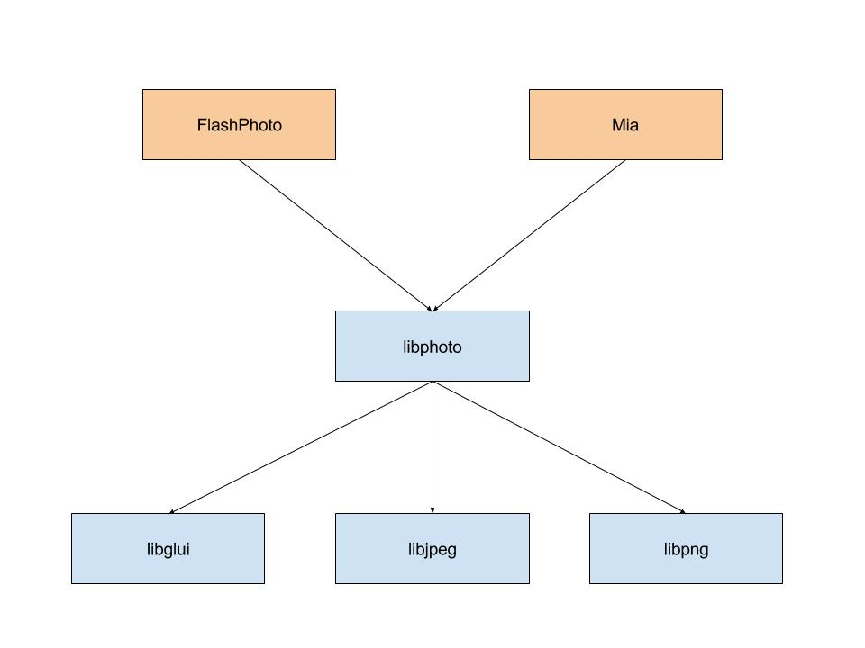
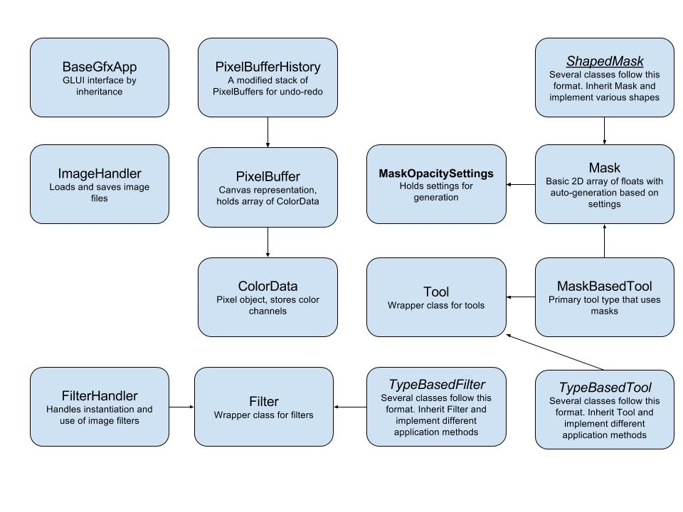

libphoto is a library designed for creating graphic editing applications.
Features include:
It depends on libglui for graphical interface and libpng + libjpeg for image loading and saving
Also included in this release are two example applications FlashPhoto and Mia. These applications setup a GUI (or command line handler for Mia) and create the proper instances of libphoto classes for all functionality
FlashPhoto is a basic photo editing application that supports many drawing tools (e.g. spray can, pen, highlighter) as well as image-wide filters (e.g. sepia tone, blur, sharpen, saturation adjustment). It supports basic features expected from a photo editor such as undo/redo, foreground color adjustment, PNG and JPEG saving/loading, etc.
Mia is a basic medical imaging application that supports image loading/saving (JPEG and PNG formats), annotation (using a specialized marker and a red pen), and a small set of filters that are useful for medical images (blur, quantize, etc.). Mia also supports undo/redo functionality; loading, saving, and cycling through a stack of images (useful for CT scans in particular); and a handy command line interface that can be used to apply filters, copy images, and compare images to see if they're identical.
A brief overview of the classes contained in libphoto. See the resources below for more information and details
For details on the currently implemented classes, see the Doxygen generated documentation. Please also review the code design guide before submitting contributions to ensure the code meets the library standards.
Several tutorials have been created to demonstrate the basics of common contributions and extensions